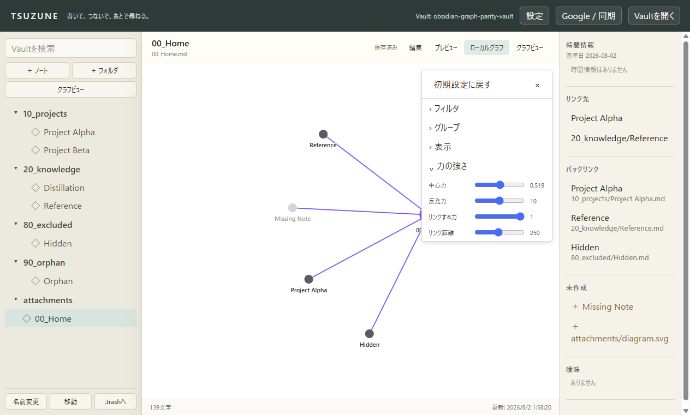
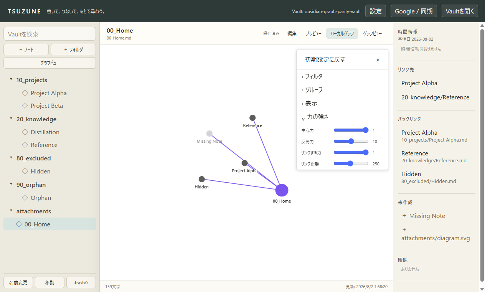
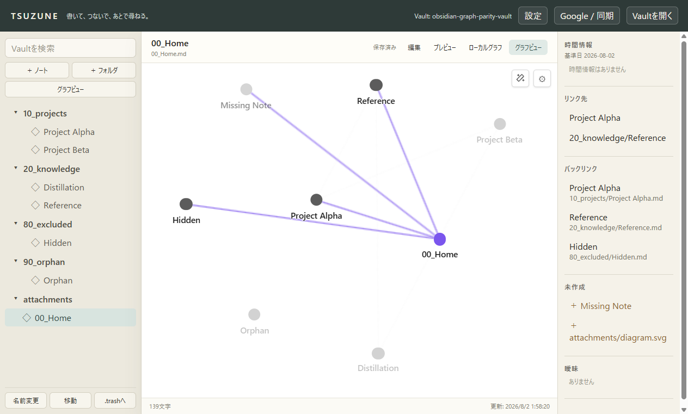
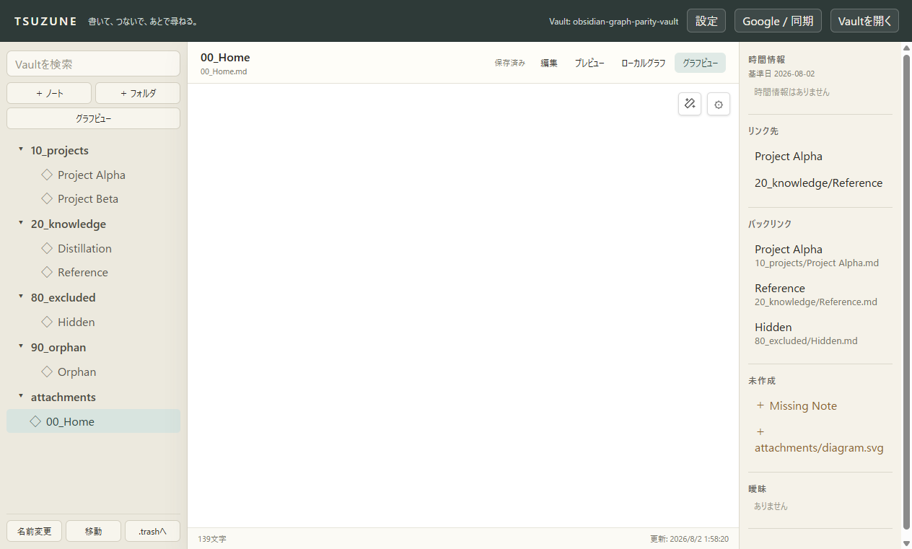
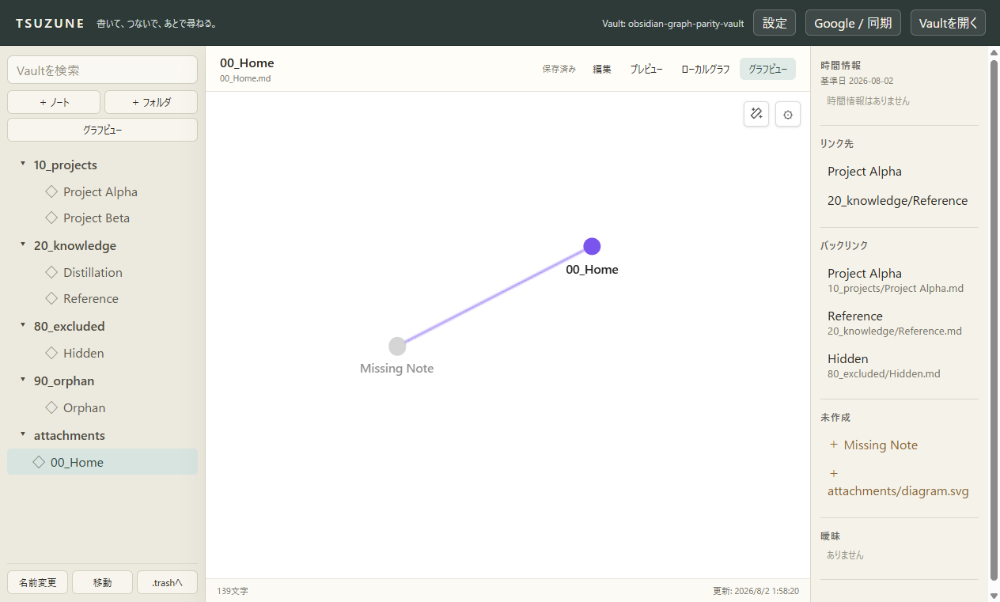
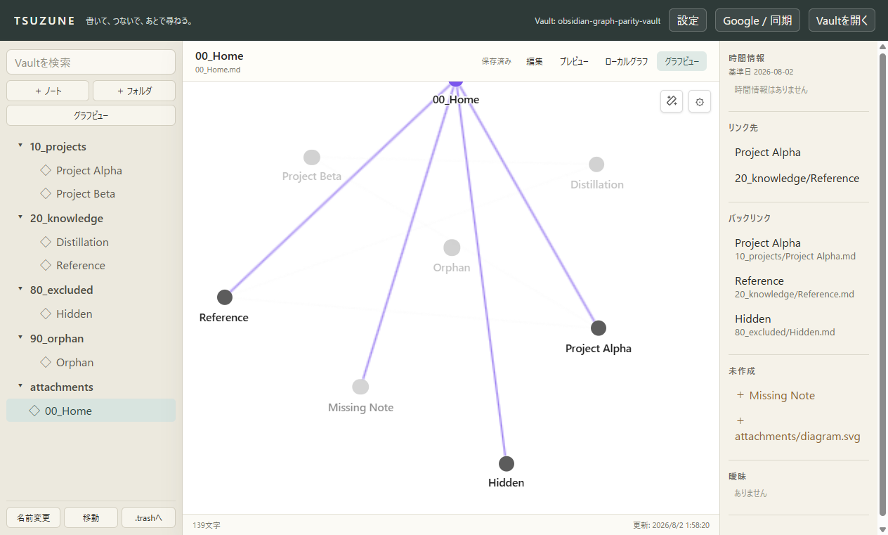

Graph Explorer — GP5-2 Runtime Closure
継続Force、全Markdown表示、円形ノード、Force設定、fit、time-lapse増分graphを隔離Electronで検証した。
47 focused tests PASS
Production build PASS
6 Electron captures PASS
Markdown unchanged
現在の判定
GP5-2のTSUZUNE側実装は検証済み。
Animate中は表示済みprefixだけがForce simulationへ入り、追加ごとに再加熱する。
通常のlive topology更新では生存ノードの座標を保持する。
ただし、Obsidian Desktop 1.13.4との同条件比較は未実施のため、Graph parity全体を
matchedとは判定しない。
ForceとVault全体

0.518713248970312、反発力 10、リンクする力 1、リンク距離 250。
1へ変更。ノード配置が変化し、値が隔離settingsへ保存された。
0キーのfit後は全ノードが画面内にある。Time-lapseの開始・途中・終了



機械検証
| 項目 | 結果 |
|---|---|
| Graph runtime tests | 2 files / 47 tests PASS |
| TypeScript・production build | PASS |
| Time-lapse Markdown件数 | 0 → 1 → 7 |
| 終了時の辺 | 通常表示と同じ8件 |
| 全Markdown表示 | 7 / 7件 |
| 円形ノード | 幅＝高さ、border-radius: 50% |
| Markdown invariant | 7 files、SHA-256 54B472FF…BC59B 前後一致 |
| 詳細JSON | capture-result.json |
未完了の一致判定
- GP6: Obsidian Desktop 1.13.4と同一viewport、DPI、theme、fixtureで画像・動画・JSONを比較する。
- node drag解放後、camera、context menu、Groups drag、Restore defaults、再起動後の保存単位を固定する。
- Search files、Excluded files、色、fade、矢印、slider端値を同じ入力で比較し、差分だけを修正する。
- 大規模Vault最適化は、GP6で計測して必要性が確認された場合だけ行う。
比較契約は obsidian-graph-parity-reference.md、実行順は PLAN.md を正本とする。
公開挙動の基準: Obsidian Help — Graph view